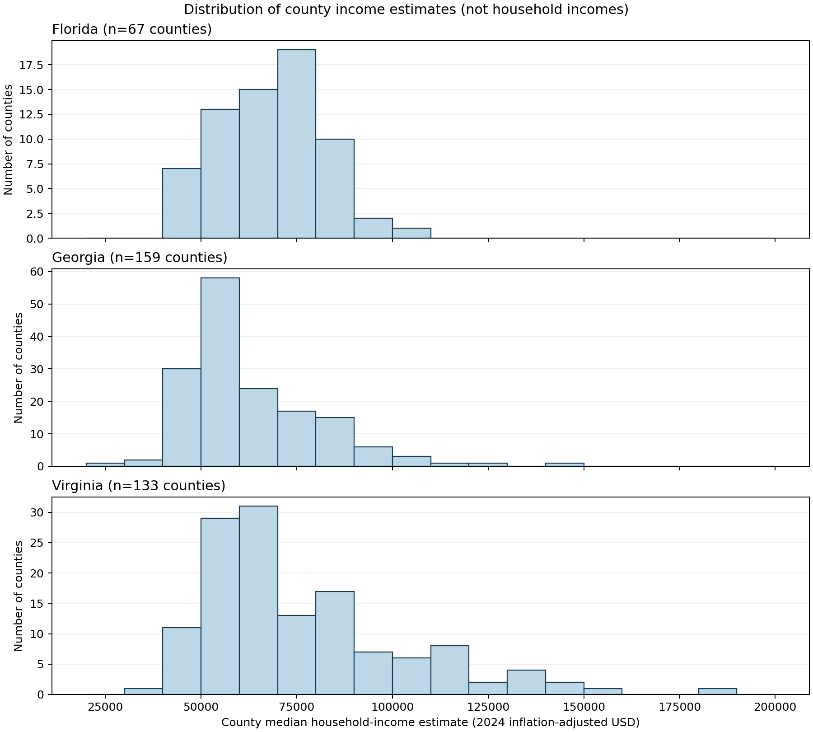

Apply the Census Bureau Statistical Quality Standards, revised September 29, 2026, within their stated scope. The chart-selection advice and implementation checks on this page explain practical design choices; they do not create additional agency mandates. Treat Essential items as the core design conditions for this chart, and confirm formal applicability through the program’s review process.
Coordinate this page with Titles and Subtitles, Legends, Sources, and Visualizing Uncertainty. Keep detailed component guidance in those shared pages rather than duplicating it here.
A histogram summarizes a distribution of quantitative observations by grouping values into adjacent numeric intervals (bins). Bar height represents the count, proportion, or density of observations in each bin. Histograms reveal shape, concentration, asymmetry, gaps, and possible multiple modes. Unlike a categorical bar chart, a histogram uses ordered numeric intervals.
Use a boxplot for compact comparisons of quartiles and outliers, a dot plot for small samples, or a density plot when smoothing assumptions are appropriate and disclosed.
Avoid a histogram for unrelated categories or to show a small number of named individual observations. Use a line graph for changes over time.
| Reader’s question | Display | Reason |
|---|---|---|
| Where are estimates concentrated? | Histogram | Shows frequency across numeric ranges |
| What are each state’s median and quartiles? | Boxplot | Summarizes distribution compactly |
| Which county has a particular value? | Dot plot or table | Identifies observations |
| How does the distribution change over years? | Faceted histograms with fixed bins | Supports comparable distributions, with proper year and dollar adjustments |
B19013_001E, in
2024 inflation-adjusted dollars. The published 90% margin of error for
that county estimate is B19013_001M.Keep numeric ranges on the horizontal axis and count, proportion, or density on the vertical axis. Use an upright, zero-based magnitude scale. Adjacent numeric bins should touch; thin outlines can separate bars, but decorative gaps should not suggest unrelated categories. Use one fill color for a single distribution, with at most one additional highlight color when that highlight has an explained analytical purpose. If separate groups require different encodings, label them explicitly or use separate panels.
The original guidance specifies at least three intervals. Use three or more meaningful bins when the observations support them; if so few distinct values exist that this would create artificial structure, consider a dot plot or table and document the chart-choice rationale.
Use these comparisons to connect each design choice with its effect on interpretation.
| Problematic approach | Why it matters | Preferred approach |
|---|---|---|
| Title says household income distribution but each row is a county median | Readers infer a distribution of household observations | Title the chart as a distribution of county median household-income estimates |
| Panels choose separate automatic bin edges | Similar bars represent different numerical ranges | Calculate and reuse one set of bin edges for all comparison panels |
| A value on a bin boundary is counted twice or omitted | Frequencies no longer reconcile to included observations | Specify left-closed/right-open intervals, with the final upper edge included |
Test the chart at its intended display size and with enlarged text. Follow the reading sequence from title to explanation, figure, table, and source. Check that labels and meaningful marks remain distinguishable without color and that any controls can be operated by keyboard with visible focus. Read the explanation and table with a screen reader to confirm that they convey the same measures, units, missing-data conditions, and important relationships as the chart.
Use automated and manual accessibility testing together. A downloadable CSV supplies values but does not replace the chart’s explanatory narrative; see USWDS visualization guidance. Record the page/version, tool or assistive technology, result, and corrective action. Apply the sponsor’s agreed accessibility baseline rather than treating a palette simulation as a conformance test.
The following examples are retained from the Census guidance. Their datasets, periods, universes and design lessons remain distinct. Some illustrate limitations or less-preferred choices; inclusion does not certify every design or its accessibility.
Example 1. Static Histogram : 2020 Demographic Analysis Estimates of the Population by Single Year of age and Series: April 1, 2020.
Source: U.S. Census Bureau Population Division, 2020 Demographic Analysis Estimates of the Population by Single Year of Age and Series: April 1, 2020, U.S. Census Bureau, Washington D.C., April 1, 2020, : https://www.census.gov/library/visualizations/2020/demo/2020-demographic-analysis-visualizations.html Accessed on 31 August 2022.
This chart is a good example of the following:
This chart could use the following improvements:
Interpretation note: The original graphic uses filled age profiles for the 2020 Demographic Analysis high, middle and low series. Those series are not ACS 90% margins of error. The ACS addition instead groups county median-income estimates into bins, with one observation per county; it is not a distribution of household incomes.
2020–2024 ACS county median household-income estimates. B19013: use common bin edges and reconcile frequencies to the number of included counties.
What this adds: Adds reproducible binning, boundary-value checks and county-observation definitions.
Run evidence: The supplied November 10, 2026 run generated this example. Saved-data arithmetic and chart layout were reviewed for this package; published-page accessibility testing remains outstanding.

Source and interpretation: U.S. Census Bureau, 2020–2024 ACS 5-Year Estimates, Detailed Table B19013, county median household-income estimates in 2024 dollars. One county or county equivalent is one observation. The supplied run completed November 10, 2026 (UTC).
All panels use the same $10,000 bin edges. Bins include the lower boundary and exclude the upper boundary, except the final bin includes its upper endpoint. Counts reconcile to all 359 included observations, with none excluded. Vertical count scales differ, so compare bin locations and read counts from each axis or table. These are distributions of county medians, not household-level incomes; Virginia includes independent cities.
Selected values (rounded for display; CSV retains exported precision):
| State | Counties/equivalents | Included | Excluded |
|---|---|---|---|
| Florida | 67 | 67 | 0 |
| Georgia | 159 | 159 | 0 |
| Virginia | 133 | 133 | 0 |
Read the data tables · Download histogram_summary.csv · Download histogram_bins.csv · Download histogram_county_data.csv
Implementation: Python source. The original illustrations above and the ACS output have separate asset paths and source statements.
Use the original illustrations to discuss design choices and their source-specific limitations. Use the ACS addition to demonstrate a documented data-to-chart workflow. Do not combine values across examples, imply that they use one dataset, or relabel a historical image as a new ACS output.
The following contract defines the intended behavior of the linked examples. Confirm the files, commands, dependencies, and generated results against the repository before publication.
Inputs: 2020–2024 ACS 5-Year B19013 county estimates and published MOEs, state/county identifiers, annotations, and an analyst-selected common bin width.
Keep one valid county estimate per geographic identifier. Identify the full 2020–2024 reference period and 2024 dollar basis. Count valid and excluded counties by state. Define shared bin edges covering every included value and record interval closure; use left-closed/right-open bins with the last upper endpoint included.
Use the supplied
Python implementation and the ACS example
runner. The runner maps this page to job histogram. Its
dependencies are listed in requirements.txt.
Confirm supported input options in the implementation and its
accompanying README.
The executed notebook contains saved outputs from the supplied ACS run. The run status CSV records generated results. The notebook produces the ACS additions; it does not recreate the historical Census illustrations.
The analytical definitions and output checks on this page also specify the requirements for an R counterpart. A verified R implementation is not bundled in this combined package. Retain R execution and Python/R agreement as outstanding validation tasks; do not describe them as completed.
A personal Census API key is required for data queries under the current
Census API guidance. Read CENSUS_API_KEY from the
analyst’s environment. Do not include keys in source control, saved
notebooks, request logs, error messages, or execution manifests; redact
the key query parameter wherever a request URL is recorded.
No shared developer credential or private file path should be
required.
For each run, save the validated data, chart PNG/SVG, a semantic HTML table, descriptive-text draft, and a nonsecret manifest in the selected output folder. Include source table/variables, full reference period, geography, units, transformations, exclusions, dependency versions, and retrieval time. Pin or record versions actually tested. For identical inputs, R and Python should reproduce the same analytical values within an explicitly documented tolerance; visual styling need not be pixel-identical.
When changing years or geographies, recheck product coverage, definitions, annotations, and comparability. A successful run does not establish statistical significance or accessibility conformance.
| Check | Expected evidence |
|---|---|
| Frequencies | For each state, sum of bin counts equals the number of included counties; excluded records are counted separately |
| Boundaries | Minimum, maximum, and every exact boundary value belong to one bin only; Python and R return the same bin counts |
| Density mode | If density is used, sum of bar height × bin width equals one within the stated tolerance; do not label density as county count |
Source-statement pattern for this example: U.S. Census Bureau, American Community Survey, 2020–2024 ACS 5-Year Estimates, Detailed Table B19013. One observation per county median household-income estimate; values in 2024 inflation-adjusted dollars; counties equally weighted. Add the specific source or reproducible request link and actual retrieval date; omit the API key. Identify derived calculations separately from published estimates.
| Problem | Correction |
|---|---|
| Calling county estimates a histogram of household incomes | Name counties as the observation unit |
| Different bin boundaries in state comparisons | Use shared numerical bin edges |
| Omitted or invalid counties disappear silently | Show exclusion counts in the data table |
| Treating point-estimate histograms as precise | Preserve county MOEs and explain survey uncertainty |
| Reading a binning artifact as a real population cluster | Check alternative bin widths and avoid unsupported inference |
Related: Boxplot, Line Graph, Visualizing Uncertainty.
Sources: ACS 5-Year API; B19013 estimate definition; B19013 on data.census.gov.
The original Census page and its example assets are preserved in this package; see the review record for the exact baseline and changes.
Use the September 29, 2026 consolidated Census Statistical Quality Standards, especially E1-6 (replication documentation), E2-2.3 (visualization requirements), and E3-2.4 (visualization review). Retain review findings and corrections separately from the design checklist.